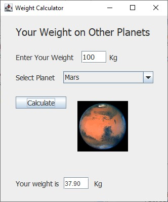
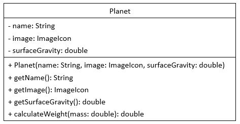
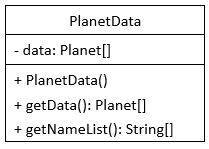

Lab2: Your Weight on Other Planets

Objectives
- Review the basic object-oriented concepts:
class and class instantiation.
- Learn how to create classes and objects in Java.
Work
- Go to your work space.
- Download the Lab2 folder.
$ git clone https://github.com/UNHM-COMP730-830/Lab2.git
- Go to Lab2_Work.
- Review Lab2.java, which includes main().
You don't need to make any changes to this file.
- Complete the Planet class in the Planet file, as specified by the
following class diagram.

- The weight is calculated by mass * surfaceGravity.
- Complete the PlanetData class in the PlanetData file, as specified
by the following class diagram.

- Use the following name, image and surfaceGravity (g) for the planets:
| name | image | surfaceGravity |
| Mercury | mercury.gif | 0.377 |
| Venus | venus.gif | 0.905 |
| Moon | moon.gif | 0.1654 |
| Mars | mars.gif | 0.379 |
| Jupiter | jupiter.gif | 2.528 |
| Saturn | saturn.gif | 1.065 |
| Uranus | uranus.gif | 0.886 |
| Neptune | neptune.gif | 1.137 |
| Pltuto | pluto.gif | 0.063 |
- Use image with new ImageIcon("../Lab2_Images/planet.gif"). The planet images are stored in Lab2_Images.
=== End of Lab2 ===